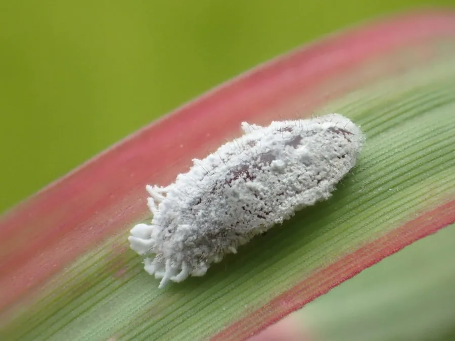

昆虫 · 动物界
康氏粉蚧 Pseudococcus comstocki

体覆白色蜡粉、体侧有放射状蜡丝的粉蚧，常藏在果柄、叶腋和枝干缝隙中吸汁，是果树与观赏植物害虫。
- 分类
- 门节肢动物门纲昆虫纲目半翅目科粉蚧科属粉蚧属
- 栖息环境
- 果树和观赏植物的枝干缝隙、叶腋、果柄及果实萼洼
- 地理分布
- 东亚地区，中国南北各果区均有发生
- 保护级别
- 暂无评估
物种志
康氏粉蚧雌成虫体长约 3–4 mm，椭圆形，柔软，体覆白色蜡粉，体侧伸出 17 对放射状白色蜡丝，其中尾端一对最长，约与体长相当。雄成虫有翅，体小细弱；卵产于白色蜡质卵囊中。
康氏粉蚧分布于东亚，在中国南北果区均有发生，寄主包括苹果、梨、葡萄、桃、桑、柑橘以及多种观赏植物。它一年发生 2–3 代，以卵在枝干缝隙、果柄洼处和土块下越冬，若虫孵化后善于爬行，常藏在叶腋、果柄和果实萼洼等隐蔽处取食。受害果实表面出现凹陷斑点，枝叶生长不良，排泄的蜜露诱发煤污病并招致蚂蚁，果实商品价值明显下降。防治需注意清园、刮除老翘皮和保护天敌。
形态与习性
- 食性刺吸苹果、梨、葡萄、桑等植物的汁液
- 体长雌成虫 3–4 mm
- 蜡丝体侧有 17 对放射状白色蜡丝，尾端一对最长
- 生活史一年 2–3 代，以卵在缝隙和土块下越冬
- 危害果实出现凹陷斑点，诱发煤污病并招来蚂蚁
- 防治清园刮皮、保护天敌、若虫期用药
趣味知识
- 康氏粉蚧体侧有 17 对白色蜡丝，尾端那一对几乎和身体一样长。
- 它总躲在果柄和萼洼等隐蔽处，喷药时很难接触到虫体。
- 蚂蚁会取食它的蜜露，并把粉蚧搬到新的枝条上扩大危害。